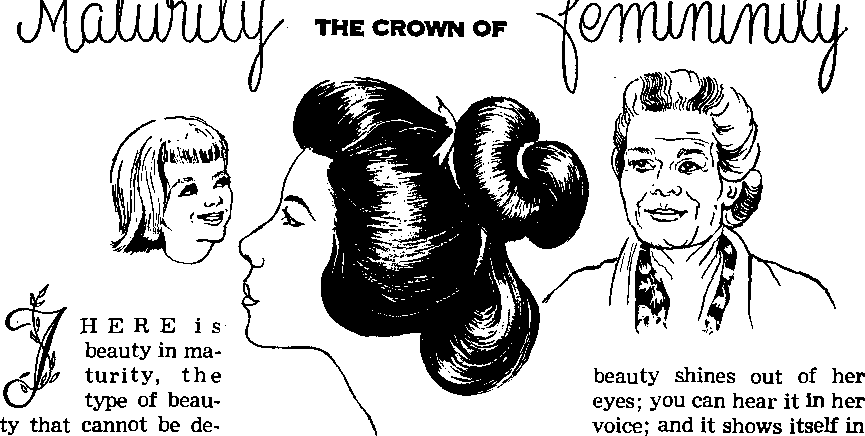
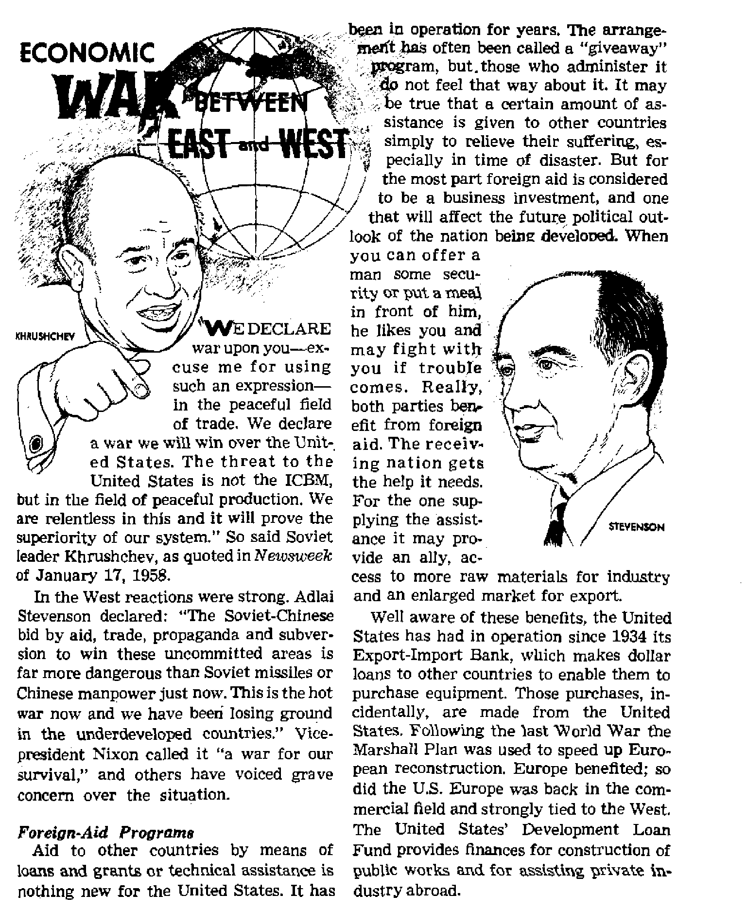

A
what Does Prayer Do for You?
Maturity—the Crown of Femininity
Wbme Dilemmas That Confront Evolutionists
nomic War Between East and West
OCTOBER 8, 1958
THE MISSION OF THIS JOURN/
News sources that are able to keep you awake to the vital issues of our times must b'e unfettered by censorship and selfish interests. ‘'Awake!” has no fetters. It recognizes facts, faces facts, is free to publish facts. It is not bound by political ambitions or obligations; it is unhampered by advertisers whose toes must not be trodden on; it is unprejudiced by traditional creeds. This journal keeps itself free that it may speak freely to you. But it does not abuse its freedom. It maintains integrity to truth.
‘‘Awakei” uses the regular news channels, but is not dependent on them. Its own correspondents are On all continents, in scores of natrons. From the four corners of the earth their uncensored, on-the-scenes reports come to you through these columns. This journal's viewpoint is not narrow, but is international. It is read in many nations^in many languages, by persons of all ages. Through its pages many fields af knowledge pass in review—government, commerce, religion, history, geography, science, social conditions, natural wonders—why, its coverage is as brood os the earth and os high as the heavens.
“Awake!” pledges itself to righteous principles, to exposing hidden foes ond subtle dangers, to championing freedom for all, to comforting mourners and strengthening those disheartened by the failures of a delinquent world, reflecting sure hope for the establishment of a righteous New World.
Get acquainted with ‘‘Awakei” Keep awake by reading “Awake!”
■ mi ntfn ■■ in ii ttn
Publish sd Semimonthly by
watchtower bible and tract society of new york, inc 11T Adams Street Brooklyn 1T N.Y., U.SjI.
N. EL KNOfta, President Geiant Suites, Secretary
Printing this issue: 2,900,000 Five cents a c°py
"Awata!” 1« p*bll»h«d h* th* following 19 limitaer Semimonthly—AfrikMin, Danish. Dutch, nmgliEb, iah. French, German, Greek, Italian, Japanese Nurwe-iUn, Portugi»w, Spanish, Swedish, Tijalog.
Monthly—Clnyanjo, Indonesian, Ukrainian, Zulu.
Yearly subscription rates
OfflMi for pem ImcnLbly editions
A merit a, U.S., 11? Adwna HL, Rnwklyn 1, N.Y. $1 Airtrilia, 11 Beresford Rd., Htruthfleld, N.S.W. 8/-Cauda, 150 Bridgeiund Ave., Toronto 10, Ont. $1 England, 34 Craven Terrace, London W. 3 T/'
N*w Zealand, 621 New North Rd., Auckland 8.W. 1 Sorth Africa, Private Ba*, Elaodsfoateln, Tvl. 7/’
Monthly cdiUona cost ball the above rate*.
Remittamaa for vubscrlptlotrg should be sent to the office in your country. Otberwhe send your remittance to Brooklyn. Notle* *1 expiration Is Rent at least two Issues before subscription expires.
CHANGES pF ADDRESS *h«*ld reach vs thirty day* beforo y*r maring d«t*. Give as year aid and new ad**™ (It poislble, your aid addrei* label). Write Watehtewer, 117 Adame Stnet, Brooklyn 1, N*w York, U.S.A.
Entered as Mcond-claxs matter at Brooklyn, N- Y Printed in U.S.A.
Th* Bibi* trowitetton lead In “Awake!" h th* Nev World Translation of th* Holy Srtrtrc. Wbew otter iranitetloai ar* *»d th* following symbols will appear tahletf th* citations:
AS - American Standard Verdon AT *- An American Translation AV - Authorised Version flUlli Da - J. F Darby's Ttmloc
Dj/ — Catholic Donay version Mo
JJD - The Emphatic Diaglott JZo
JP - Jewish Publication Hoc.
- Isaac Leepers vendon Fp
— James Moffatt's version — J, B. Rotherham's vcrslor, — Revved Standard Version - Robert Young'.? version
CONTENTS
Maturity—the Crown of Femininity
Some Dilemmas That Confront
Economic War Between East and West
How Dangerous Is the Black Widow?
Nature’s Show of Autumn Colors
A Judge's Advice: Respect Father’s
"Your Word Is Truth”
Jehovah’s Witnesses Preach in All
OUTH in the United States today is soft, soft, SOFT! Yes, it
is soft in three respects: physically, mentally and morally. Its physical softness is seen in the fact that over a period of years Selective Service has had to reject 40 percent of draftees because of physical unfitness. Thus also in muscular fitness tests seven times as many Unit
chief characteristics of American youth, namely, wanting to be liked and conformity to its particular set; these facts were demonstrated by Purdue University professor H. H. Remmers and elucidated in Scientific American, June 1958. According to him the American nation seems to have a disease that has the symptoms of the deadening of the will, pathological overde
ed States youths failed as did European youths.
That United States youth is also mentally soft is apparent from the complaint of many parents that “Johnny can’t read,” as well as from the vexation of executives because stenographers cannot spell. It is also seen in the easing of entrance tests on the part of many colleges. A recent poll of 1,100 high school principals showed that 90 percent of them held that public schools required too little work of the students.
Most serious of all is youth’s moral softness; in which respect, however, United States youth does not stand alone. Testifying to this moral softness are two velopment of the ego and malnutrition of the intellectual fiber.
America's widespread juvenile violence is but the running sore of this modem American disease: “Teachers slugged and threatened . ; . children terrorized by knife-wielding hoodlums . . . discipline a joke in many schoolrooms. In communities from coast to coast, violence and fear are causing concern in the schools.” Thus the U.S. News d> World Report, May 30, 1958, summarizes its sickening eight-page report on “Where Violence Hits the Schools.”
Who is to blame'! Churches? schools? parents? youth itself? They all have erred and that in thesame respect, of sacrificing sound Bible principles for undue sentiment or sentimentality.
But parents, more than all the others, are the erring ones. They indulge a child’s fondness for sweets and physical ease to the harm of bodily health and strength. They evince more concern for their child’s comfort than for his mental development. And most serious of all, they let undue sentiment or sentimentality interfere with very much needed discipline. Rather than being firm, parents allow the children to run the household.
The Bible repeatedly stresses the child’s need for discipline. (Prov. 22:6,15; 23:13, 14; 29:15, 17) Modern child psychologists are beginning to appreciate that fact. Thus Dr. Spock recently observed: "Too much self-sacrifice [on the part of the parent] is not good for either the parent or the child ... If discipline is based on love, and the child gets the idea that it is being done to help him, he likes it. . . . There is more chance of conscientious parents getting into trouble with too much permissiveness than with too much strictness.’’
Testifying to the same effect is a report that appeared in the New York Sunday Times, September 1,1957. Under the heading of “Youth in Nigeria Get ‘A’ in Conduct,” it told of an American exchange group finding “little delinquency with strict upbringing. Nigeria is at least one place in the world where juvenile delinquency does not seem to be much of a problem. The native children do not have the time for it, and their parents just refuse to put up with youthful monkeyshines.”
Throwing light on why Italy appears to have the lowest juvenile delinquency rate of any Western country, Arnaldo Cortesi states: “Most Italians are still as firmly convinced as their ancestors that there is nothing like a timely smack or a hearty spanking to teach the young what’s what.
... The owners of the well-slapped cheeks and well-spanked behinds grow into teenagers who are, on the whole, possessed of considerable poise and remarkably free from the restlessness, the urge to rebellion, the feeling of insecurity that seem to afflict their likes in many other countries.” —New York Times Magazine, February 23,1958.
Judge Samuel S. Leibowitz, who is senior judge of the highest criminal court in Brooklyn, New York, believes that “a child must be disciplined to do things he does not want to do, if it’s in the best interests of the family, . . . The child does not want a do-as-you-please, ‘permissive’ world. It makes him unhappy, confuses him. He wants the solid walls of rules and of discipline around him, defining his world—giving him a large free area but telling him exactly how far he can go.” —This Week, December 15, 1957.
In short, the softness of youth in the United States is due to pampering, which, in turn, may be said to be caused by confusing love with sentimentality. Far from being one and the same, they are opposites. Sentimentality pampers, is weak, selfish, impractical, unwise and ignores principles. Love, on the other hand, is firm, strong, unselfish, practical, wise and principled. The parents who truly love their child are concerned with the maximum development of all his powers and possibilities and therefore gladly sacrifice, when necessary, their own and their child’s feelings for the greatest good. That is why God’s Word says: “Whom Jehovah loves he disciplines.” “The wounds inflicted by a lover are faithful.” “Sow for yourselves righteousness, reap the fruit of steadfast love.” All this softness of modern youth would disappear if parents would replace sentimentality that pampers with love that disciplines.—Heb. 12:6; Prov. 27:6; Hos. 10:12, RS.
■
^«KRHAPS one of the great-''Htost of all gift|to man is the
"a^privilege of pfoyer. Nothing —yes, nothing—-is more re-frtwlng to the soul. '
Prayer is talking with God. It is having communion with him and listening to him. Prayer is the love of man for God and tor his fellow man at work. Prayer enr|thes the mind, for-tides the heart. It natures and'builds up It energizes the will and lightens the emo tional. and spiritual burden of the day. The fact that man can. at any time and in. any place address God and be heard is one of
the most comforting thoughts there is in life. A praying man or woman, need'never be alone. There is always God, and he will not forsake the righteous in. prayer, because prayer is of God.
Prayer turns *us to God. It makes us sensitive to his guidance and receptive to his power, ft builds within, us a love for man, thus making it easier not only for us 'but for others to turn to God and be heard. Prayer reminds us that God is “and that he becomes the .rewarder of those earnestly seeking'- him.”—Heb. 11:6.
Prayer also affords us an opportunity to see ourselves as we really are and not as others see us. It allows us to see our own heart as God sees it “Because mere man sees what appears to the eyes, but, as for Jehovah, he sees what the heart is.” “Jehovah is the examiner of hearts.” In prayer we dodge all wff-deception and come out into the open before God. The many devices that we use to. escape admitting the truth about ourselves to others are set aside in prayer.. In prayer we are not out to impiw or deceive anyone. So in the limelight of prayer we can have a good took: at ourselves and see the real '‘me,” the type of person we truly are. We can behold what we want to be—clean, decent, happy, content, pea.ceiu.1, God-fearing creatures—and what we are—sinful, weafc cowardly, helpless, deceptive, deceivab^ and so often miserably wretched and worthless. As the apostle Pau! said of himself after a self-examination: “For the good that I wish I do not do, but the bad that I do not wish is what I practice. Miserable man that I am! Who will rescue me from, the body undergoing this death? Thanks to God through Jesus Christ (Mir Lord!” Prayers afforf an exeeUont opportunity to examine ourselves, and these honest examinations are usually humbling in nature. They keep us from becoming heady, high-minded, haughty and too self-righteous.—1 Sam. 16:7; Prov. 17:3; Rom. 7:19,24,25.
Before men we give ourselves plausible excuses for doing some of the things we have done or have made up our minds to do, but before God in prayer we are different. Since we are aware that He searches out the innermost thoughts of the heart, we do not seek to keep or hide things from Him. We expose ourselves, come clean, as it were. We do not pretend, nor do we make excuses. We usually sense our fallings. Our shortcomings become magnified before our eyes. We petition Jehovah as David did; “O Jehovah, you have searched through me and you know me. You yourself have come to know my sitting down and my rising up. You have considered my thought from far off. My journeying and my lying outstretched you have measured off, and you have become familiar even with all my ways. For there is not a word on my tongue, but here, O Jehovah, you already know it all.”—Ps. 139:1-4.
Knowing and believing that Jehovah reads the mind and the heart prevents us from lying to him. We speak the truth to God, Thus while praying we are not lying to ourselves. In the light of this truth that we speak we have a chance to see what we are. In this way prayer gives us an opportunity to cleanse ourselves from the wrongs we may be doing, or are about to do. Our vanities and falsehoods become evident before our eyes, allowing us to remove them if we want to. Prayer affords us a clean, fresh start to do right, to straighten up and follow a path of honesty, uprightness and integrity to Christian principles. Prayer keeps before us an image of the kind of person we want to be and are not. So we pray and continue in prayer, exercising faith in Jehovah’s mercies and praying that in his love he will assist us to be the kind of creatures he would have us be.
Prayer Aida Appreciation
Away from prayer we are prone to see virtues in ourselves that are not there. But in prayer we readily admit that we are not so virtuous after all. We confess that we are slaves to sin and its wage, death; that we are in desperate need of a Redeemer, a Savior, that can save us from the corruption that is at work in us. Prayer thus helps us to appreciate Jehovah’s wisdom and love in providing an arrangement for our redemption through our Lord Jesus Christ. It helps us to have faith in the ransom sacrifice. Through prayer the need of the ransom remains constantly before us, so that we are moved by gratitude to express appreciation to Jehovah for rescuing us out of a humanly impossible situation that inherited sin has placed us in.
Honest and sincere prayer strips us of all illusions about ourselves. We sense our unworthiness, our inadequacy and our dependence on God for everything. Alongside Jehovah’s perfect standard our failings appear magnified. The body is crushed at the thought of falling short and appeals to God for mercy. Humility is born. Confidence and trust in Jehovah’s arrangement for salvation are nurtured. The creature senses Jehovah’s understanding and forgiveness. God’s words, “For I will forgive their iniquity, and their sin will I remember no more,” inspire hope and courage in man to press on, that not all is lost.—Jer. 31:34, AS.
Not only does prayer build appreciation for what is good and right, but it also creates the right climate in which these qualities grow. Prayer is Jehovah’s way of having man get better acquainted with himself and bis God. it is the medium Jehovah uses to relieve men from the conscious guilt of sin. Prayer frees the mind and allows for joy and happiness to take over. It is one of the greatest contributors to mental health and spiritual prosperity.
Prayer Exposes the Motive
Prayer does other things for us too. It makes us honestly own up to our motives, whether they be good or bad. When we pray our desires become very plain. By exposing our heart’s desires we can see whether our motives are Christian or not, whether our intentions are good or evil. Thus prayer provides us with a chance to correct our motives if wrong and to pursue them more vigorously if right. Prayer exposes wrong desires before they have had time to become too solidly entrenched, or before they have gone too far. Thus, when we see ourselves in the true light of prayer, we are moved to pray as David did in the fifty-first Psalm:
“Show me favor, O God, according to your loving-kindness. According to the abundance of your mercies blot out my transgressions. Thoroughly wash me from my error, and cleanse me even from my sin. For my transgressions I myself know, and my sin is in front of me constantly. Look! you have taken delight in truthfulness itself in the inward parts, and in secret may you cause me to know wisdom itself. May you purify me from sin with hyssop, that I may be clean; may you wash me, that I may become whiter even than snow. May you cause me to hear exultation and rejoicing, that the bones that you have crushed may be joyful. Conceal your face from my sins, and blot out even all my errors. Create in me even a pure heart, O God, and put within me a new spirit, a steadfast one. Do not throw me away from before your face, and your holy spirit O do not take away from me. Do restore to me the exultation of salvation by you.’*—Ps. 51:1-3, 6-12.
Prayer makes one conscious of his spiritual needs. It gives man a chance to discover thoughts that are concealed to himself, motives that he is not aware of. Prayer uncovers the true self. It reveals one’s attitude toward others. It encourages self-examination. What are my concealed thoughts? my faults? my sins? my mistakes? David in prayer showed that men commit wrongs unknowingly. So he prayed: “Mistakes—who can discern? From concealed sins pronounce me innocent. Also from presumptuous acts hold your servant back; do not let them dominate me. In that case I shall be complete, and I shall have remained innocent from much transgression. Let the sayings of my mouth and the meditation of my heart become pleasurable before you, O Jehovah my Rock and my Redeemer.”—Ps. 19:
' 12-14.
Prayer Aids Judgment
Prayer strips us from all wiliness and artificiality. It exposes the inner spiritual poverty of man. However, it nourishes righteousness by upholding the Word of God, which shows that man is weak, sinful and in need of guidance from above. Prayer thereby inspires faith in Jehovah’s Word and in its sustaining power. While prayer is hard on one’s ego and pride, nevertheless it is good for the spiritual well-being of man, because it washes away the blinding, eroding and corroding influences of pride and deceit in man that lead to destruction. —Prov.16:18,19.
Prayer teaches us how to become more Christlike. In the Scriptures we read that Christ often retired from the crowds to be alone with God. Luke tells us that Jesus “continued in retirement in the deserts and praying”; that “he went out into the mountain to pray, and he continued the whole night in prayer to God." Matthew informs us that Jesus went “into a lonely place for isolation.” This constant need for meditation and prayer was a fundamental trait of Christ, To men of God solitary prayer and silence is just as necessary today. It allows time for self-examination, an opportunity to evaluate one’s steps without having to contend with outside distractions of any kind. Time spent alone with God in prayer is a period of great refreshment. These are periods of restoration and rebuilding. How can we restore and build up ourselves and others if we never take time to refresh and replenish our depleted selves? Time spent in prayer is never wasted. These are hours of life well spent.—Luke 5:16; 6:12; Matt. 14:13.
Prayer helps us to face up to decisions that need to be made. Jesus, before choosing his twelve apostles, “continued the whole night in prayer to God.” Before his trial and death he prayed earnestly and late into the night. During times of decision and trial men need the spirit and comfort God gives more than they need their sleep and food. They should spend more time with Him in prayer. Too often our prayers are much too short and hurried, without the heart and mind in them. We do not deliberate. We do not dwell long enough for our words to establish contact. We do not let what we say and the words of God soak in. We pour forth, and that is it. Some pray the same prayers they prayed when they were children. No wonder they receive no satisfaction from prayer. Often their prayers are without real faith in the power of prayer and what it can do. Just a recital of words can hardly be said to be prayer. Our prayers must be mingled with strong faith and conviction, Otherwise they will not be heard.—Luke 6:12; 22:39-46.
A Christian, before taking a serious step or before making a responsible decision, will pray long and earnestly to God. If he spends all night with God praying, for certain his decision will not be a hasty one. Prayer will have allowed him ample time to think over the rights and wrongs in the light of God’s Word, Talking with God will help him to see his true motive, and jn the calmness of prayer he will be aided to arrive at a proper conclusion. Oftentimes the right things to do are the hardest. Prayer will give us the strength to do them. It will fortify and steady the conscience to endure rebuke or disapproval, for we will know we have done the right thing.
If we are about to make recommendations or to approve appointments, prayer will aid us to see that our selections are not tainted with personal favoritism or partiality. For if they are, God will reveal the same to us. Our true motives always rise to the surface if we but linger awhile with God. Jehovah the Great Judge weighs and tries the mind and heart. Once enlightened, only a very stubbomhearted person will resist the direction and counsel of Jehovah. Fewer mistakes would be made if men in responsible places would spend more time with Jehovah in prayer before reaching their conclusions.—Jer. 11:20; 17:10.
So in numerous ways prayer works for you. Its end result is the fashioning of a better, happier and more efficient servant of God. When one continues to pray and follows the wise counsel of prayer, such a one brings Jehovah, the Author of prayer, much praise and glory. So forget not the precious privilege of prayer. “Pray incessantly,” as Paul commands. Pray that you may be found worthy to continue in one of the greatest of all privileges bestowed upon man—the gift of prayer.—1 Thess. 5:17.
o
fined by a single word nor described by a single act. Maturity is said to be that indefinable, indescribable certain observable something in the lives of women that makes them outstanding among others of their sex. No other quality contributes as much toward femininity or speaks more highly of women than maturity.
Maturity is not to be confused with age. Many people make this mistake. Age may be a contributing factor, but it is not the whole ingredient. Girls of sixteen can be as mature and charming as their grandmothers of sixty. And there have been inconsistent women of seventy more immature than their granddaughters of seventeen. The calendar may be a means for measuring days, months, years and seasons, but it certainly is not a device for determining the tender qualities of women.
While physical beauty is not a requisite for maturity, yet a mature woman is ever beautiful. She may not be a beauty in the sense in which this world calls a woman beautiful, with its attention fixed on sex and sex appeal. Rather, a mature woman’s the way she conducts herself in business and in her private life. She is not hasty with her words or easily driven to anger. For the most part she is calm and poised.
Maturity is usually associated with qualities of understanding and consideration. A woman that is mature is capable of wise decisions. She knows how to manage her life and the. house well. Speaking of such a womam Solomon «aid: “In her the heart of her owner has put trust, and there is no gain lacking. Strength and splendor are her clothing, and she laughs at a future day. Her mouth she has opened in wisdom, and the law of loving-kindness is upon her tongue. She is watching over the goings on of her household, and the bread of laziness she does not eat. Her sons have risen up and proceeded to pronounce her happy; her owner rises up, and he praises her.” —Prov. 31:11, 25-28.
Mature persons are often referred to as being open-minded and sympathetic in nature. They have a great sensibility. They keenly appreciate the varieties of temper of others around them and sympathize in their laughter, love, amusement and tears. They have a way of showing they care for people’s feelings and lives. An authority said: “I’ve seen a brilliant woman listen courteously while a man who knew nothing of this subject (which happened to be hers) talked a lot of nonsense. She had no desire to attract him. She might easily have demolished his speech and his self-assurance. Because she cares for people, finds their pride a more precious thing than her status as a ‘brilliant woman,’ she kept pleasantly quiet.”
Now we can all be that way if we trv It costs us nothing to be patient with and benevolent toward people. We make no great sacrifice. The luxury of indulging in the sentiments of others never maxes us a penjtv _poorer. Yet these considerate actions of ours tell others that we are understanding, loving and mature. So much of maturity is the exchange of mutual affect1'nn the pleasure of giving and receiving tvarmneaneuiiebs Maturity seems to have its Beginning in one’s being unselfishly concerned over the well-being of others.
Understanding and Loving People
A mature woman has a genuine affection for people. A sweet friendliness fills her heart and her style when dealing with them. The things that endear her to others she does with a spontaneous generosity of spirit. When counseling her children, she tries to restore them in the spirit of mildness. She knows how to instruct, to comfort and to encourage.
Another quality of hers is a beautiful sense of adjustment. She finds it no great problem to be a scrub woman one moment and Dr. Jones’ secretary the next. At home she may be a mother, a hostess and an affectionate wife all in a matter of minutes. The next time you see her she may be balancing a budget or growing petunias or preparing an elaborate meal, doing each iob with eoual deftness and dexterity.
Feminine maturity calls for an understanding of people, especially of the op posite sex. Often women speak of men ai little boys grown tall. A mature womar may think it so, but she will never admit it, not even to her closest friends. One thing sure, she knows better than to treat men that way. Treat a man like a little bov and he win despise you tor if. Women may boss, trick ana even lie to little boys, but they should not try doing the same to men. (Not that we recommend such treatment for little boys.) Men have outgrown that resilience that comes naturally with youth. A mature woman will make a request of a man, but never will she order or boss him. She will not lie to him either. She may refuse to answer, even evade, but never will she lie to him directly. She knows that decent people do not lie to one another and that lies have a way of catching up with the liar. And when they do, look out! Men have no patience with women that lie.
A woman that corrects a man in public shows herself to be sadly immature. Mature women shudder at the thought of correcting men at any time, let alone in public. For a woman to debate with a man, to challenge him and to get him into a dispute that causes wrangling to break out, or to belittle his appointed position, shows she lacks good judgment. She is begging for trouble. The man may not say a word, but inwardly he will despise her. Play it safe. Let men learn from men. If you feel that you must correct a man, wait till you are alone with him, then in absolute privacy speak your piece. He will appreciate your considering his feelings, which shows good judgment on your part—an ingredient of maturity.
Control the Tongue
Men hate sarcasm, and when it comes from a woman, they hate it so much the more. For good reason, then, mature women avoid it like a plague. In fact, they are very careful how they use their tongue. Can you picture a whining, nagging woman as someone mature? Hardly. A nagging woman will lose her man. He may be beside her in the flesh, but he lives behind a fortress of indifference to a complaining, contentious woman. Solomon said: “The contentions of a wife are as a leaking roof that drives one away.” “Better is it to dwell upon a corner of a roof than with a contentious wife, although in a house in common," A woman who picks apart everyone and everything will soon be in want of company. She is a sick woman, not someone mature.—Prov. 19;13; 21:9.
Of course, gossiping is also bad. And matme know 'AvcA -gasavp not destroys others but also tears down those who pass it along. Exposing the follies and faults of other women in front of men is something else that mature women will studiously avoid. They know men do not care for such practice, even if they do not say anything about it. Mature women prove themselves discreet by not being overly critical. They prefer to defer their opinions. They take special precautions to avoid being tagged with a reputation for creating scenes and situations, for ganging up on other women, for starting friction by catty remarks and for belittling their menfolk for what they do. They know it is wisdom on their part to be soft, gentle and completely feminine; that a woman's submissiveness in a happy, honest and straightforward way is what wins for her the highest form of recommendation from both men and women.
Not all men can at once feel comfortable and relaxed in the presence of women, in fact, only a very few do. It is an art to be able to put men quickly at ease, and mature women have this trait. They know haw to make take an interest in men’s problems and their work and in them personally. They show men that they care. In unpretentious ways they make men feel needed, wanted and appreciated. They possess the knack of making men feel inches taller than they really are. As could be expected, men like this. They enjoy having such women around them.
Perhaps the surest test of a woman's maturity is to find out if she is liked by aWii'Ti. As a Tche, mature women are. Because they show love and sympathy for others they, in turn, are loved—love and understanding being the basic ingredients of maturity. The way to grow to maturity, then, is to increase our love for God and man. By increasing our understanding and love for others, by being more compassionate, considerate and forgiving in nature, we will help not only ourselves but others to grow to maturity. These qualities tend to buoy us and others up in times of need; they seem to restore confidence and build trust. They also encourage understanding and inspire hope. A woman that has these qualities is a blessing indeed. She is maturely beautiful, wearing the true crown of femininity.
<[, Earthworms to many persons are creatures that grow only a tew inches long. Many of the some thousand species of earthworms are only a few inches long, but some tropical species grow to a length, at several feel. Ap. Aus.tK®liasx attains the enormous length of six to seven feet—a respectable size for any earthworm!
SOME^DILEMMA THAT CONFRONT
EVOLUTIONISTS
VOLUTION’S first dilemma is getting life from lifeless matter. Once
life was believed to generate spontaneously from decaying bodies. Maggots appeared from nowhere. Dried grass in a glass of water generated tiny creatures that could be seen dashing erratically about under magnification by microscope. But as the light of increasing knowledge drove back the darkness, the evidence for spontaneous generation of life vanished with the shadows. Rigidly controlled experiments proved no exceptions to the rule that life comes from life. Today evolutionists may speculate that some simple organism at one time sprang from a chemical process, but they can’t make it happen or give evidence that it ever did happen. They acknowledge that it would be so staggering an event as to border on the miraculous.
Evolutionists were disappointed with the collapse of spontaneous generation to get life from dead matter, but were heartened by the discovery of the microscopic forms of animals, or animalcules, as they are called. So they shifted their interest to these greener pastures, turning from the dilemma of origins to the problem of development. What more logical beginning for evolution than these specks of living material that were so tiny and seemed so simple? Hie bridge between them and the inanimate should not be so hard to construct, and from them to man evolution would build the road. So they called these tiny blobs of protoplasm “protozoa,” meaning “first animals,”
But further study caused the supposed simplicity of these animalcules to disappear and in its place came a complexity of structure and physiology that brought amazement. These were tiny
animals, with nothing preanirnal about them. Nature writer Joseph Wood Krutch says in The Great Chain of Life, pages 4, 5,11:
“There are at least fifteen or twenty rnousand kinds, differing so widely in structure, physiology, and habits of life that most generalizations about them are others Qsb, reptiles from other reptiles, or mammals from other mammals.
“Without stomachs they digest; without lungs they take in oxygen; without kidneys they secrete uric acid; and without bladders they collect it in pockets from which it is finally expelled. Without sex organs they have an effective system for mingling heredities, and they exchange portions of chromosomes carrying hereditary traits quite as effectively as the most highly developed animals. They are tiny but just as difficult to explainas a man or a whale. Simple, indeed!~ff~ffie~ffiit living things really were like them, then the sudden appearance of a protozoan was a phenomenon almost as astonishing as the sudden appearance of an elephant would have been.
“ ... A great deal of ink has been spilled over the ‘missing link’ between the anthropoids and Homo sapiens. But it is as nothing by comparison with all the links which are missing—if they ever existed—between amoeba and that first particle of barely living matter which, as so many glibly assume, arose as the result of an admittedly ‘improbable’ (and never repeated) chemical reaction.”
The Dilemma over Sex
Another mystery is the origin of sex. Some claim that the first use of egg and sperm for reproduction is in Volvox, a tiny green organism just visible to rne naked eye. Yet biologists do not contend that man, or fish or reptiles for that matter, get sex from Volvox. Volvox. they say, $vas an experiment that jieyer progressed., which is to say that while it developed sex, higher animals got it elsewhere, from an unknown development that independently paralleled Volvox—which only makes the matter doubly remarkable!
In a popular magazine article on sex Hugo Gemsback agreed with Dr. Edwin Stephen Goodrich, professor of zoology and comparative anatomy at the University of Oxford, who said: “The evolution^ ary history of sex is not yet known.” Gemsback adds: “An understatement, if there ever was one!” Note the following extracts from this article, with italics added to draw notice to the vague, speculative guesswork in less than half a page:
“We can attempt here to make some educated guesses, but they can only remain speculations until such time as scientists can produce positive evidence.
“It is almost certain that primordial primitive sex started several billion years ago on this planet. Most likely this occurred in slimy, oozing areas near a body of water. There was no life of. any kind as we know it on the planet up to that time. Conditions had to be just right in every respect before life could appea r—ayob^Mj/ simuttanemisly—m many regions on Earth.
“ . . . Nor are we certain what the original primordial life-bearing form was. Some scientists^mfias that it was a vegetable form, but we are not certain. . • -
“We do not know exactly how long asexual life lasted on our planet before the advent of sexual reproduction, but it is probable that this primitive form existed for millions of years. It still exists. Probably true sexual life, with which we are mostly concerned here, appeared much later. . . .
“~We have no clear conception yet as to what physical conditions and which chemicals were involved when the ova and spermatozoa originally developed. Nor do we know which came first. Most likely neither. Probably at first both were almost alike; then some outside chemical or other force changed the cell structure fundamentally. Eventually, through long evolutionary processes of trial and error, the final male and female cells were evolved. . . .
“We now must go back perhaps a billion years to the original ovum and spermatozoon and ask a further all-important question ;_Whydo ova and spermatozoa attract each other so powg^ully "SncF^we'an-swer this clearly and scientifically, the great sexual riddle will be answered for all time.”
Facing the Problems
The impression given to the general public by scientists is that evolution is a settled fact, but when speaking to fellowscientists the evolutionists face the problems confronting them. In the May 9,1958, issue of Science Theodosius Dobzhansky wrote the article “Evolution at Work.” After opening with questions about human nature and man’s origins, he says: “It would be naive to claim that an evolutionary approach supplies all the answers, but it Is relevant to these questions and may profitably be used as a guiding light in the quest for some of the answers.”
He thinks the occurrence of evolution of life is well established, but does add in fairness: "The evidence has no t_ satisfied quite everybody ;~a few' people who are not ignorant of the pertinent facts arq nevertheless antievolutionists.”
In discussing the forces that bring about evolution, he mentions discoveries concerning Mendel’s laws, chromosome behavior in cell division, and mutations in tha genes. But he admits: "Strange to say, it was during this period that some biologists professed much skepticism about the feasibility of explaining evolution in terms of the processes then being discovered. Bateson, one of the leaders of genetics in its formative years, was the foremost skeptic. This attitude is still lingering in some places, especially in continental Europe."
Dobzhansky’s evidence of “evolution at work” was concerning small changes in fruitflies; No believer in creation contends that there is no change. .Jlbesejch^^s give variety to the family kinds menGoned in Genesis chapter one of the Bible. The Bible shows that these created kinds bring forth after their kind, but it allows for much variety within the family kind. These varieties may even be called separate species by modem biologists, but if (they are ijjterfertile they are in the samJrTjenesiiT k^Jj^isrltJrflieS^^matfchangesdifeEfflbfi^ isU balk at, but the imaginary big ones that would hurdle the boundaries of the family kind. While acknowledging the small changes, creationists cannot say that the little ones prove that there are big ones, as Dobzhansky reasons;
“It is needless to labor the point that the evolutionary changes described above are small compared to those which led from
the eohippus to the modem horse, or from an australopithecine-like animal to man. The former are microevolutionary [small evolution] and the latter macroevoluflon-ary [big evolution] changes. Nevertheless, microevolution and macroevolution are parts of a single continuum, and studies on the former help to elucidate the latter.” In his book Genetics and the Origin of Species he does say: “It must be admitted that in no case have all the differences be-tween two good species'been completely resolved into gene changes^" ' ~
The Burden Put on Paleontology
For small changes to build up into big ones they must accumulate for millions of years, the evolutionists say. To get from one kind to another kind takes too long to observe in living forms, so the evidence for these big changes must be found in the fossil record, and that study is called “paleontology."
Unhappily for the evolutionist, paleontology presents him with a dilemma instead of evidence. Dobzhansky admits its evidence is “not completely clear and consistent." In this way he impeaches his own witness because it does not give the desired testimony. In part 2 of A Textbook of Geology by Schuchert and Dunbar, page 38 reads: "Most of the evidence for evolution in its broader lines, that is, from family to family, or from phylum to phylum, has been or can be, furnished only by the paleontologist, who is in an especially favorable position to observe it, seeing as he does the procession of life during the geologic ages. Unfortunately .however, the. geological record is very imperfect."
Darwin was distressed by paleontology’s failure to give evidence of the millions of intermediate links needed to connect family with family: “Why then is not every geological formation and every stratum full of such intermediate links? Geology assuredly does jtot reveal any such finely.-. graduated organi£_chain; ^nd this, per-^p^isUiemostoBviousand serious objection which can be urged against the theory."—origin of Species, sixth edition, part 2, page 55.
The fossil record shows many fossils of life within the Genesis kinds but no intermediates bridging these kinds. The gaps are many and wide; anjj to say that the millions upon millions** of intermediate form^rieeded were~~gtr~lDEt~'by~'cfiance Strains reason, and this evolutionistic paleontologist" G. G.~Simpson of the Amerb can Museum of Natural History honestly admitted; “The facts are that many species and genera, indeed the majority, do appear suddenly in the record, differing sharply and in many ways from any earlier group, and that this appearance of discontinuity becomes more common the higher [and later J the level, until it is virtually universal as regards orders and all higher steps in the taxonomic hierarchy. . . , their absence is so nearly universal that it cannot, offhand, be imputed entirely to chance and does require some, attempt at special explanation, as has been felt by most paleontologists.”-—Tempo and Mode in Evolution, by Simpson, pages 99, 106, published 1944.
The burden of big evolution breaks the back of paleontology.
“The Educated Public”
And the method evolutionists use to break the back of resistance to their theory is the same one religionists used in Jesus’ day. On one occasion the chief priests and Pharisees sent out officers to bring in Jesus, and when the officers were asked why they returned empty-handed they said: “Never has another man spoken like this.” In reply the religious leaders did not cope with what Jesus said, but used the tyranny of authority to beat down the officers: “You have not been misled also, have you? Not one of the rulers or of the Pharisees has put faith in hint, has he? But this crowd that does not know the law are accursed people.” However, these religionists were not being truthful, for some of the religious leaders did put faith in Jesus.
—John7:46-49.
A similar tactic is often used by evolutionists to browbeat the public into accepting the theory. All the scientists believe it, they argue. All educated people do too. It is just the ignorant that hold back, they say. This exerts pressure to force people to believe, for who wants to be classed as ignorant ? No proof is offered—just the tyranny of authority. But even the claimed authority is lacking. Many scientists accept the theory, and some of them under this same pressure of tyranny of authority. But many do not. Many educated persons do not accept it. Yet this false argument is repeatedly used to pressure the theory into the mass mind.
In its April 26,1958, issue The Saturday Evening Post published an article by Loren Eiseley, chairman of the Department of Anthropology at the University of Pennsylvania, entitled “An Evolutionist Looks at Modern Man.” In it he said: “The educated public has come to accept the verdict of science that man, along with the plant and animal world about us, is the product of endless evolutionary divergence and change.”
But ask this “educated public” why they believe, and they can give no sound reasons. To believe without reasons is not education but gullibility. To believe only because pressured into it is cowardice. Certainly Eiseley gives no proof in his article, and even as he speaks of new fossil evidence he offers none. But his words In this connection do offer the reason why so many believe the theory, namely, it has been repeated so long and so loud and so
insistently that the sheer power of propaganda broke down mental resistance: *‘Today we are well convinced of the general course of man's rise from some ancient anthropoid line. Each year new fossil evidence of this fact is brought to our attention. Each year the public grows more accustomed to this history, feels more at home in the natural world . ,. °
Loren Eiseley proceeds to lament that man accomplishes so much with his technology, yet never before has he been in “so disheartening a period in all that stands for the nobler aspects of the human dream. His spiritual yearnings to transcend his own evil qualities are dimming as he is constantly reminded of his animal past.”
But who is it that magnifies the technological, and scuttles the spiritual by defaming the Bible, and constantly reminds man of an animal past, and a fictitious one at that? On what grounds should an evolutionist complain when he harvests the fruit of the seeds he has sown?
Evolution is no shining human dream, but a dismal nightmare. Its ultimate goal is, according to the scientists, a total blackout for the stars, the suns, the moons, the planets, and for all life in the universe. Wound up by they don’t know whom, the universe is supposedly running down to complete oblivion. It is a cheerless, depressing theory without foundation in scientific fact and really has its birth in an emotional desire for a club to beat the Bible with. If morality is beaten to bits in the process, certainly the evolutionists who wield the club should be the last to complain.
Men of reason searching for a hope will turn to an honest and open-minded investigation of God’s Word, the Bible,
CENTRAL PROCESSING
DN HIS work The Organization Man William H. Whyte, Jr., tells the following: "Several years ago, I wrote a little piece for Fortune satirizing current integration trends. ... I presented a plan for a Universal Card. The idea was to do away with the duplication of effort in which each company goes about testing [an employee’s personality] independently. Instead of each company tackling the job on its own, there would be one central organization. Eventually everyone would be processed by it—from school oh. One’s passport to organization life would be his card. On it would be coded all the pertinent information: political leanings, marital relations, credit rating, personality test scores, and, if the states co-operated, the card would also be oneJs operator's license and car registration. (We had a very realistic card gotten up, complete with laminated photo of a young man wearing thick hornrimmed glasses.} With this tool, organization could get full loyalty: if a man developed
hostility he could not escape by leaving an organization. His card would be revoked and that would be that. Lest readers get too excited, I made the end patently ridiculous: with the card, I said, society would be protected from people who questioned things and rocked the boat. For good measure there was a footnote indicating that the whole thing was a hoax.
i "To our surprise, a considerable number of people took it seriously. Some thought it was appalling. . . . Many readers wrote indignant letters, and several newspapers editorialized with great heat. . . . Unfortunately, however, many who took it literally thought* it was a splendid idea and the net effect of the article on them was to embolden them to action. The president of the country’s largest statistical firm called in great excitement to find out if anyone had yet started the centra] processing organization—he said it was the sort of idea you kick yourself for not having thought of first"
The United Nations has an agency known as the World Bank to aid in large-scale projects. Now there is the comparatively new International Finance Corporation, with an operating capital of $100 million to use for helping smaller private concerns in countries needing development.
Results of the foreign-aid programs have varied. Some skirmishes in the economic war have been won. However, in speaking of the Marshall Plan the president of the Confederation of Italian Industries said: “I think the U.S. could have gotten much more out of its aid program than it did.” He felt that U.S. direction of how the money was spent was too strict. He said that when a man receives a Ioan with conditions attached, he is inclined to remember the conditions and forget the loan; but if he is given the loan and along with it a little friendly advice, the impression is a better one.
A Newcomer in the Field
The Soviet is really a newcomer to the field of foreign aid, that is, outside the Communist bloc. Late in 1954 the news spoke of it as “a new Soviet challenge to the West,... a Soviet Point Four program through which Moscow is seeking to make friends and influence people by offering to make major contributions to the industrialization of non-Communist underdeveloped nations.” During the four years since then it has boldly dug in for the economic war.
Instead of following the Western policy of extending aid in many directions, the Soviet has employed strategy in selecting nations where it felt its ends would best be served. The trade-and-aid war comes under an agency called the Chief Directorate for Economic Relations, and its program is co-ordinated with the activity of the satellite nations.
Indonesia, Afghanistan, Egypt and Syria have all received help from the Soviet bloc. The largest non-Communist nation in the East and one rich in resources is India, a prize sought by both camps. Russia has advanced to India credits of over $250 million, including construction of a steel mill and training technicians and workers for industrial purposes. The United States is providing loans so India can purchase what it needs fof development. It is not charity. The one who makes the loan expects the business, and they say so.
In spite of the well-known Communist objective of domination, their offers of economic aid are being accepted. Why? There are a number of reasons. One is the fact that the Soviet has advertised that there are “no strings attached” and, at least at the moment, seems to hold to it. Nor do they usually ask for a detailed report on the use of funds provided. Further, when aid is promised it comes through with remarkable speed, since everything is controlled by the state. Then, too, loans are made on a long-term basis with low inteiest rate, and repayment may be accepted in local commodities or currency, all of which makes the offer quite attractive. The fact of the matter is that the battle strategy is effective enough to give considerable concern to political leaders of the West.
International Trade
High tariffs may be used to protect domestic business interests, but they may also alienate badly needed friends. To achieve international understanding on these problems and avoid unnecessary friction, thirty-seven nations, including the United States, are members of an agency called GATT, which stands for the General Agreement on Tariffs and Trade. Also, in the early part of 1958 the U.S. Congress heard strong appeals to continue the Trade
Agreements Act, with its provisions for freer trade, to strengthen the position of the West in the struggle for economic supremacy.
Said Clare Boothe Luce, former U.S. ambassador to Italy: “Mutually profitable trade spells friendship and draws countries tighter together than military alliances can. A military alliance can become onerous, expensive, dangerous, unpopular. Buying and selling between nations remains, in all countries, a popular,.. undertaking.” President Eisenhower stressed the need for proper trade policy to win the economic war when he told Congress: “The Soviet Union is engaged in an intensive effort, through combined programs of trade and aid, to divide the countries of the free world, to detach them one by one and swing them into the orbit of Communist influence?’
The East is certainly not blind to the importance of international trade. The New York Times of January 4, 1958, reports: “The role of trade in bloc economic diplomacy is clearly indicated by Khrushchev’s admission to a Congressional delegation that the Soviet Union values trade more for political purposes than for anything else. This is particularly true of bloc trade with the less developed countries, which rose by 70 percent from 1954 to 1956?’
Newsweek; in reporting on the situation as it stood in February of this year, pointed out that the East was gaining on several fronts. When no market could be found in the West, Burmese rice and Egyptian cotton were sold to Russia. In South America Uruguay had agreed to sell meat and wool to the U.S.S.R. Argentina, El Salvador and Brazil were contemplating trade agreements with Moscow, and Chile had already sold tons of copper wire to Russia. Then there was Canada, unhappy about the effect that unloading of U.S. wheat abroad had on its own wheat mar-ket, that hoped to do business with Red China, The U.S. may still lead the field, but competition is keen.
It may not be a shooting war, but foreign aid and international trade are powerful weapons in the economic war. Carefully handled, they serve to win allies, open new markets and assure possession of military bases. From the standpoint of the world, they are business investments that pay off with economic and political victories in the struggle between East and West
Will the resources of the earth always be used to gain selfish control? Definitely not. In God’s new world there will be no division of the nations into competitive commercial or political blocs! There will be no fear o£ unemployment or hunger due to selfish control of the products of the earth, for “they shall sit every man under his vine and under his fig-tree; and none shall make them afraid?’ And what assurance is there that it will come about? “The mouth of Jehovah of hosts hath spoken it?*—Mie. 4; 4, AS.
Speaking of Christendom’s churches, Baptist minister Edwin T. Dahlberg is quoted in Tarbell's Teachers1 Guide: "We are too prone to comfort ourselves with a psychiatric gospel of relaxation and peace of mind. We love to quote the Twenty-third Psalm and John 3:16. How soon will we discover those mighty passages In the Bible in which the prophets stood before their people and smashed the idolatries of their day?”
HE rattlesnake, the cobra, the scorpion, the black widow spider—which creature has the most potent poison? The answer:
The black widow.
Tests have been made of the potency of various poisons. Potency is determined on the basis of the weight of dried poison sufficient to kill a rat. Thus there are claims that the black widow’s poison is about six times as potent as a cobra’s and about fifteen times as potent as a rattlesnake’s.
Fortunately the situation is not as terribly dangerous as it seems. For one thing the cobra or rattlesnake injects a far greater amount of poison into a wound than does the black widow; thus these snakes are far more dangerous than the black widow. But the black widow is dangerous enough, since it is reputed to have the most potent poison of all venomous creatures.
In his book The Life of the Spider John Crompton writes: "No spider’s bite should be passed over too lightly. . . . The genus to be feared is Latrodectus. This genus does not live in England, though its family (which boasts the notorious Black Widow among its members), Theridiidae, is numerous with us. . . . Latrodectus ... is almost the only spider that need be feared by the larger animals. She kills and eats tarantulas and scorpions, and horses and camels are put out of action by a single bite. In 1903 a camel bitten on the lip by a species of Latrodectus died in a few hours. . . -The Black Widow of America (Latrodectus mactans) is probably the most dangerous of all the spiders.”
As the name indicates it is the female that is dangerous; the male is reputed to be harmless. The coal-black females, about a half ineh long, almost invariably have a red x-shaped or hourglass marking on the underside of the abdomen. It is thought that the female black widow almost always devours the male immediately after mating, which accounts for her widowhood and her name. But numerous authorities say that it is only occasionally that Mra, Black Widow makes a dinner of her smaller-sized mate. Actually the female is not a mate he ad-huntress; she eats her spouse usually only when in dire hunger.
Mrs. Black Widow sets up
housekeeping in rubbish heaps, under stones, in dark sections of garages and outbuildings and around cellar windows. She is shy and retiring and ordinarily makes no effort to bite humans, even when subjected to provocation. The danger lies in accidental contact; then the black widow bites in self-defense.
What happens to a human when bitten by the black widow? The poison is neurotoxic. Like the cobra’s poison it attacks the nerves, causing severe distress, sharp pains in the abdomen, nausea, faintness and difficulty in breathing. The pain from a black widow bite has been described as agonizing, excruciating, gripping, cramping, shooting and numbing. A person usually recovers after a day or two. Only rarely does the black widow bite prove fatal to humans. The book American Spiders says: "Approximately 1300 cases of black widow bite were reported in the United States from 1726 to 1943.” A total of fifty-five deaths was recorded. Obviously there were many more bites not reported, probably because they caused only mild discomfort.
How is it that a black widow’s bite can be fatal or severe to some persons and yet only mildly distressing to others? There are several factors involved. The spider can inject poison at its own will. So the black widow may strike one person without injecting any poison; another person may receive a full dose. And if the spider chooses to inject poison, the amount injected varies, depending on how much poison is in the poison sacs at the time of the attack. Some of it may have been expended on inserts.
When dealing with the black widow caution should be your watchword. Do not take unnecessary chances; never pick them up with the fingers. Their bite is dangerous, although a fatal outcome is quite a rarity.
NE of nature’s most spectacular shows is often taken for ed. Yes, many spectators at na^
ture’s show of autumn colors seldom realize that this colorful spectacle limited to only a few regions in the world;
Where are nature’s shows of autumn colors to be found? In the temperate regions of deciduous forests. Deciduous trees and shrubs are those that lose all or almost all their full-grown leaves annually. These forests put on the spectacle known as autumn coloration, a spectacle that is extremely limited, because temperate, deciduous forests occupy only three large areas in the world.
These three large areas are (1) westcentral Europe and the British Isles, (2) eastern China and parts of Japan and (3) the eastern part of North America. What about the Southern Hemisphere? Here the spectacle of autumn coloration is virtually unknown. “In all of Africa and South America, with the exception of a small region in southern Chile, there is no autumnal extravaganza,” says Dr. Jack McCormick, staff ecologist of the American Museum. “Elsewhere, south of the equator, only limited areas in Tasmania and. New Zealand, present displays of autumn color.”
Exquisite autumn productions are to be found on Alpine slopes and in the Rhine and Danube valleys. Probably the most brilliant of all nature’s autumn shows is put on, Dr. McCormick feels, in eastern North America. Thus the inhabitants of the eastern half of the United States and of southeastern Canada are ideally situated to witness the spectacle. Some of the eastern states of America put up signs in autumn directing the traveler to areas where the spectacle unfolds in glorious splendor. New Hampshire even issues weekly maps to inform spectators of the progress of nature’s show of autumn colors.
The Three Families of Pigments
Where do the colors come from—the clear yellow or soft pink and sometimes the blood red of the sassafras tree, the brilliant crimson of the sweet gum, the radiant yellow of the tulip tree, the yellow-gold leaves of the catalpa, the dull gold of the shagbark hickory, the rich butter yellow of the American elm and the gorgeous mottling of yellows and reds of the maple?
This show results from the sequence of three families of pigments: (1) chlorophyll (yellow green and blue green), (2) carotenoid (pale yellow to orange red), (3) anthocyanin (red to blue).
The green pigment chlorophyll, of course, is predominant in summer. It is so abundant in summer leaves that it makes up more than 80 percent of all the pigment found in them. This may seem like a great deal of pigment. It really is not A leaf’s fresh weight contains only about 3 percent in pigment. Obviously, not much pigment is needed to color a leaf.
But how does the color transformation come about? Partly through the addition of dyes and partly through the unmasking of colors that were already in the leaves. Yes, no matter how green a leaf is, some bright colors are already there! The yellow is there, but it is eclipsed by the green.
However, as the nights get longer and cooler, the liquid foodstuff begins to drain out of the leaves, going back into the limbs and trunks. The chlorophyll supply, constantly renewed throughout the summer, begins to diminish. This takes place long before the first frost. It is a slow process at first, but as the brilliant days of October come on the chemical transformation progresses swiftly. Finally chlorophyll renewal fails, the chlorophyll breaks down and the leaf would now be colorless were it not for the other two families of pigments.
Why is it that the yellows do not break down and vanish at the same time the chlorophyll does? Because the colors collectively called carotenoids are more stable than the chlorophyll pigment. So it is, with the green gone, the yellows begin to shine forth; and if there are no anthocyanins present, the leaves turn pure yellow or orange.
Reda Added in Autumn
The anthocyanins are formed in most trees only in autumn. In summer they are found in a few trees such as the copper beech, the purple-leafed plum and the Japanese maple. The anthocyanin pigments may occur, as dissolved dyes in the sap, in the outer cell layers of the leaf, whereas the chlorophylls and carotehoids concentrate in the leaf’s inner cells. Thus the beautiful spectacle of a leaf mottled with yellows and reds is caused by local patches of anthocyanin pigments masking out the carotenoid ground color. What variety of hues the anthocyanin pigments may produce—a brilliant scarlet, all shades of reds, a subdued lavender, a purple and even a deep blue!
From what do trees manufacture their pigments? “In contrast to man who makes his paints from oxides of lead, chromium and the like,’’ says Science News Letter, “plants manufacture their colors from sugars and the chemical relatives of sugars. Plant-pigment molecules contain the same atoms as those of sugar: carbon, hydrogen and oxygen. But they are put together in a different way.’’
Sunshine, Cool Weather and Frost
Nature’s show of autumn colors differs in the intensity of coloration from year to year because the weather differs. When autumn days are clear and bright and the nights are crisp, just hinting of frost, the forests glow with intense yellow and flaming red. On the other hand, warm, cloudy autumns will result in a different production: colors will be subdued and yellow hues will predominate.
Frost also affects nature’s production. If the frost comes early it has an adverse effect on the red pigments. Just as the anthocyanin pigments are formed only slightly when the weather is wet and cloudy, so likewise they form only to a small degree when the frost comes early. Then nature’s show is made up primarily of yellows and browns.
The colors of every species of tree show some diversity; yet there is usually a prevailing color in each. Maples display various hues of red. The oaks range through yellow-orange to red and reddish brown. The birches take on a golden yellow. The sumacs display a fiery scarlet. The tupelo, also known as “pepperidge,” may turn into a pillar of fire. The quaking aspen puts on a golden-yellow crown that glows in the autumn sun after the leaves of many other trees have fallen. The sugar maple, thriving best in New England, displays clear yellow and bright orange glistening through the deep crimson. Perhaps the most brifhant mdividiiai 'performer in. nature’s autumn show is the red maple; this is the tree described in the fall as a “beacon of scarlet flame.”
It Is this tree, the red maple, that Thoreau praised in his writings: "Some single trees, wholly bright scarlet, seen against others of their kind still freshly green, or against evergreens, are more memorable than whole groves will be by-and-by. How beautiful, when a whole tree is like one great scarlet fruit full of ripe juices, every leaf, from lowest limb to topmost spire, all aglow, especially if you look toward the sun! What more remarkable object can there be in the landscape! Visible for miles, too fair to be believed.”
As the season advances both the yellow pigments and the reds break down and brown tannins increase, changing the leaf color. The time comes for leaves to fall. This is no mere process of the snapping off of leaves. If that were to happen the tree would be filled with thousands of tiny, open wounds, making the tree vulnerable to the ravages of disease-causing fungus spores. So what happens? At the base of the stem of a leaf a double layer of a corky substance forms; this serves to bind up each half of the open wound caused by the severing of the leaf from the branch. As the corky substance grows, it finally cuts off the sap flow. Soon the union between the two layers becomes dried out and weak. A puff of wind or some raindrops finish the job and the dead leaves flutter down to earth.
The trees are bare now, and the forest floor is carpeted with the brown of fallen leaves. Nature's show of autumn colors is over.
'JJ The book The Stars My Blanket by Beryl Miles tells how a baby kangaroo was adopted as a pet: “A group of three 'roos, mother, father and baby, were feeding on the plain, among the tufts of spinifex. ‘What a picture!’ ejaculated Mr. Donkin, stopping the truck, ‘Quick, Beryl, the light tester. Donald, get the movie camera ready.’ But, by the time we had taken up positions, mother and father ’roo were already half-way across the plain. Baby 'roo, however, who was only two feet nothing, and had never seen a human being before, was completely bewildered. In his bewilderment he turned round five times, saw a pair of khakiclad legs, thought with relief, ‘Ah! there’s father!’ and promptly hopped over to Mr. Donkin. When I bent down and picked him up gently, he showed no fear at all. My wind jacket was unzipped and, ail of a sudden, he spotted the opening in it. Like a shot he dived head first Into it, leaving only his tail and two back legs sticking up in my face. This was obviously mother’s pouch! As father and mother were now well out of sight, we decided to adopt the little joey, as baby kangaroos are called.”
HE senior judge of Brooklyn’s highest T criminal court, Judge Samuel S. Leibo-* witz, recently traveled to Italy to find the answer to the riddle of the rocketing rate of juvenile delinquency in America, Writing in This Week magazine of December 15, 1957, he said: "Why is it that Italy’s delinquency rate is so low? ... I toured Italian cities, trying to get the answers. Eventually I was rewarded with the revelation I was seeking: I found an element there, a basic, vital element of living that is disappearing in this country and which, to my mind, is the most effective solution to the malady of young delinquency.
“In Italy ... an important police official asked me if it were really true that teenagers attacked police in this country. I had to tell him it was, ‘Ah, this is very hard for us to believe,’ he said. ‘No Italian youth would ever lay hands on a police officer.’ . . . From all parts of Italy, from every official, I received the same answer: The young people in Italy respect authority.
“They have a respect that starts in the home and carries over into the school, the city streets, the courts. I went into many Italian homes to see for myself what the experts were talking about. I found that even in the house of the poorest laborer, the father was respected by the wife and the children as the head of the family. He was the leader of that family, and ruled his brood with varying degrees of love and tenderness and firmness. His household had rules to live by, and the child who disobeyed them was punished,,,, "Thus, from the ancient wisdom of the Italians, who have the best-behaved teen-agers in the Western world, I found the nine-word principle that I think can do more for us than all the committees, ordinances and multimillion-dollar programs combined: Put Father back at the head of the family. These nine words spell out the tragedy of the American teen-ager. He has been raised in a household where ‘obey’ is a dirty word, and where the mother has put herself at the head of the family. . , . How many times have you heard a father say, ‘John, it’s time to go to bed,’ or words to that effect, only to be topped by mother saying, ‘Oh, Harry, leave the boy alone. Stop picking on him.’ The result has been that father has slowly, albeit grudgingly, abrogated his leadership. , . . Every time that mother overrules father, undermines his authority and his standing in the eyes of the child, she knocks a piece off the foundation on which the child stands. ....
"Does that mean the women must forsake their role as child-rearers? Not at all. . . . She has the same day-to-day, hour-to-hour responsibility she has always had, but she focuses authority and finality and discipline on her husband. When there are disagreements and problems, they are discussed and argued, but not in front of the children. . . . We have single leadership in every walk of our lives —the school principal, the city’s mayor, the commanding officer. . . . Why shouldn’t the family have the same advantage?"
How Not to Fight Communism
A recent book by J. Edgar Hoover, director of the Federal Bureau of Investigation, is called "Masters of Deceit.” The volume bears the subtitle: “The Story of Communism in America and How to Fight It.” The F.B.I. chief also gives information on how not to fight communism. He writes: "Too often have I seen cases where loyal and patriotic but misguided Americans have thought they were ‘fighting communism’ by slapping the label of ‘Red' or ‘Communist’ on anybody who happened to be different from them or to have ideas with which they did not agree. Smears, character assassination and the scattering of irresponsible charges have no place in this nation. They create division, suspicion and distrust among loyal Americans—just what the Communists want—and hinder rather than aid the fight against communism.”
World Peace in God's Way
MODERN civilization inherited the concept of a righteous world government of peace and security, not from its militarists or politicians, but from the inspired writings of the prophets of God. Jehovah caused righteous men to envision and proclaim a peaceful world to come. Twenty-six centuries ago Isaiah foretold a time when Jehovah shall judge between many peoples “and they shall beat their swords into plowshares, and their spears into pruning-hooks; nation shall not lift up sword against nation, neither shall they learn war any more.”—Isa. 2:4, AS.
Today those very words appear on a marble wall that faces the United Nations Plaza in New York city. They symbolize the avowed purpose of that organization. World peace, however, has adroitly eluded the world. How will it come, and when?
From God’s Word, the Bible, we learn that no organization of men, no political party, no religious organization of Christendom can bring what mankind desires and needs, because soon now all such worldly organizations will pass away. In no uncertain terms the Bible states: “The world is passing away.” And that “in the days of those kings shall the God of heaven set up a kingdom which shall never be destroyed, nor shall the sovereignty thereof be left to another people; but it shall break in pieces and consume all these kingdoms, and it shall stand for ever.”—1 John 2:17; Dan.2:44, AS.
The reason why these worldly kingdoms are consumed is that their god is Satan the Devil. He is “the god of this system of things,” but not the rightful ruler of the earth. The one whose right it is to rule the earth is the One to whom Jehovah stated: “Ask of me, that I may give nations as your inheritance and the ends of the earth as your own possession. You will break them with an iron scepter, as though a potter’s vessel you will dash them to pieces.” This One is Jehovah’s Kihg-Son Christ Jesus.—2 Cor. 4:4; Ps. 2:8, 9.
According to Bible prophecy, the resurrected Christ Jesus was installed in heaven as acting King A.D. 1914. He is the righteous, chosen servant of God, and to him Jehovah has committed the rulership of our earth. To him Jehovah says: “Look! my servant whom I chose, my beloved, whom my soul approved! I will put my spirit upon him, and he will make clear to the nations what judgment is. . . . Indeed, in his name nations will hope.” So you can find no hope for peace by looking to the rulers of this wicked world, but in the name of Christ Jesus the believing people of all nations will hope.—Matt. 12:18-21.
Why will they hope in his name? Isaiah answers; “The government shall be upon his shoulder; and his name shall be called Wonderful, Counsellor, Mighty God, Everlasting Father, Prince of Peace. Of the increase of his government and of peace there shall be no end, upon the throne of David, and upon his kingdom, to establish it, and to uphold it with justice and with righteousness from henceforth even for ever. The zeal of Jehovah of hosts will perform this,” Yes, world peace will come in Jehovah’s way.—Isa. 9:6, 7, AS.
Before Jehovah brings world peace, however, he must first subdue all unrighteousness. Because as long as the wicked are in power, disorder, strife, oppression and murder will continue. Therefore, Satan and his entire wicked organization must be destroyed. This Jehovah promises to do in "the war of the great day of God the Almighty," called Armageddon. Ih that God-ordained war all authority and power that has raised itself in opposition to God will be smashed to pieces. Then peace will come to our earth to stay forever.—Rev. 16:14,16.
Under the peaceful rule of Christ Jesus there will be no harsh, oppressive agents to browbeat the people and misrule them. The battle of Armageddon will put an end to all oppression. That is what Psalm 72:4 says: “Let him judge the afflicted ones of the people, let him save the sons of the poor one, and let him crush the defrauder.” No more will people be put in fear of losing their homes. The prophet Micah tells us: “They shall sit every man under his vine and under his fig-tree; and none shall make them afraid: for the mouth of Jehovah of hosts hath spoken it.”—Mic. 4:4, AS.
In the new world will exist no schemer who is out to defraud his fellow man. No land-grabber will live there either. There will exist nothing to burden the people unjustly. Says Jehovah’s Word: “Woe to them that devise iniquity and work evil upon their beds! when the morning is light, they practise it, because it is in the power of their hand. And they covet fields, and seize them; and houses, and take them away: and they oppress a man and his house, even a man and his heritage.” —Mic. 2:1, 2, AS. '
The rule of the new world under Jesus Christ will not only bring lasting peace and prosperity but also give the people freedom from sin and death. Said the new world’s Ruler: "Do not marvel at this, because the hour is coming in which all those in the memorial tombs will hear his voice and come out, those who did good things to a resurrection of life, those who practiced vile things to a resurrection of judgment” Beloved dead ones will return from the graves. Tears of bitterness will cease to flow and the fear of death wffi disappear forever. The apostle John writes: “And he [God] will wipe out every tear from their eyes, and death will be no more, . . . The former things [of this present evil world] have passed away.”—John 5:28, 29; Rev. 21:4.
The battle of Armageddon, which is just ahead, will open the gates of that righteous rule of the new world, and that rule will be seen and felt throughout the earth: "The productive land also becomes firmly established so that it cannot be made to totter.”—Ps. 96:10.
Do you desire that New World rulership and the blessings it will bring? If you do, then take your stand for Jehovah God. Inform yourself about his requirements for life. As the prophet states: “Seek ye Jehovah while he may be found; call ye upon him while he is near: let the wicked forsake his way, and the unrighteous man his thoughts; and let him return unto Jehovah, and he will have mercy upon him; ... For my thoughts are not your thoughts, neither are your ways my ways, saith Jehovah. For as the heavens are higher than the earth, so are my ways higher than your ways, and my thoughts than your thoughts.”—Isa. 55:6-9, AS.
Man’s ways and thoughts have never brought lasting peace to our earth. And the Bible answers why: “The way of man is not in himself; it is not in man that walketh to direct his steps.” “Unless Jehovah himself builds the house, it is to no avail that its builders have labored on it. Unless Jehovah himself guards the city, it is to no avail that the guand has kept awake.” Through his King-Son Christ Jesus, Jehovah will both bring and keep the peace, to the satisfaction of all that live. —Jer. 10:23, AS; Ps. 127 ;1,
France
FROM the coal-mining areas of the north, and the seacoast towns of the south, to the winding stairways of the Latin Quarter in Paris, the Christian society of Jehovah’s witnesses in France definitely is on the march.
Their zeal and message are the same and the result of their work is at least equal to that of Jehovah’s witnesses in many other countries, but the mind of the people and the thinking they encounter often is considerably different from that found in the rest of the world.
Here there is considerable interest in the Bible, but also a common view that it is a "Protestant” book. French Catholics would be astounded at the church’s vigorous claim in Protestant countries that “the Bible is a Catholic book.” For, while there are numerous displays of Bibles in Paris bookstore windows, and while some of these displays say that the Bible has a prominent place in the church, time and again the French wdll tell you that their grandparents were told that the Bible is a sorcerers’ book, used in witchcraft, and something of which they should beware.
Imagine the thrill, then, of hearing such elderly people, perhaps living in a little Paris room perched at the top of five or six flights of tiny stairway, who, during even the first home Bible study conducted with their grown children, keep injecting such comments as: “I told you that’s why the church didn’t want us to read the Bible —we might learn something!”
Most of the French have not accepted the Bible as an authority to be recognized as law, as have some other people, so merely showing them a Bible quotation may not convince them. But they take pride in knowledge, and many are ready to respond admirably when the Bible’s reason and logic are shown to them.
Their political difficulties do not worry them nearly so much as the newspapers in the rest of the world would like to imply, and the future does not interest most of them as much as the present does. But they have the same desires as all other people, and are concerned with the immediate present, with the news of the day, and often show particular interest in. the obvious present fulfillment of the Bible’s prophecies about the “last days” when men w’Ould be “lovers of themselves, lovers of money, self-assuming, haughty, blasphemers, disobedient to parents, without gratitude, with no loving-kindness, . . . having a form of godly devotion but proving false to its pw;er.” (.2 Tim. Show them that long ago the Bible foretold these things, and you will find that many are very interested in what you have to say.
“In our territory,” said one witness, “the problem is finding the time to go from door to door. I place an Awake! magazine or a booklet with someone, then call back to show him more about how the Bible deals with world conditions, and right there I have another home Bible study started.”
How do you approach those who pride themselves in “modernism” and say they do not believe the Bible? One witness explained: “I say, ‘Well, that’s easy to understand. Many people have been turned away
from the Bible by a church that doesn’t even teach what the Bible says. For example, the Bible doesn’t even mention the trinity, the immortal soul or purgatory, and doesn’t teach a fiery hell, the use of images, or the worship of saints.’ By then his French curiosity takes over and makes him want to know what the Bible does teach, anyway.”
As one young Frenchman, visiting at a home where a Bible study was being conducted, recently said: “I can see I’m going to have to start from scratch; this isn’t anything like I’ve heafd before.”
Can you imagine the thrill Jehovah’s witnesses have in teaching such receptive people the vital, life-giving meaning the Bible really has for today?
And they do it at every opportunity. Two of them gave such a fine testimony to an official at a home for delinquent children that the Witnesses were the first religious group invited to speak to the youths—a meeting that was described as a “full success,” with more than half the youths expressing a lively interest in the Bible subject.
Another witness, in a railroad station at 3:30 a.m., seized the opportunity to witness to a particularly noisy group of youths, and as a result found interest, obtained a subscription and arranged for a home Bible study.
The individual French witness may sometimes feel he is not producing great results, but the total effect of the work of 12,000 of Jehovah’s witnesses here (more than a 20-percent increase since last year) is tremendous. “And as for Awake!" said a Paris congregation servant, “last April alone we distributed 233,409, enough to make a stack more than half as high as our famed Eiffel Tower!”
Thus today thousands of Frenchmen, impressed in the same way as were the soldiers who, because of Jesus’ impressive teaching, refused to molest him, literally are saying of the witnesses: “Never have our church leaders spoken like this!”
• Why Soviet aid is being accepted by non- ( communist countries? P. 18, f6.
• Why a man who prays need never feel alone! P. 5, 112.
• How prayer exposes wrong desires before they are entrenched! P. 7, 1[1.
• What quality contributes the most toward femininity! P. 9, fl.
• How a woman shows by her treatment of a man that she is wise and mature? P. 10, f4.
• What evolution’s first dilemma is? P. t2, fl-
• Why paleontology presents the evolutionists with a dilemma? P. 14, f6.
• Why foreign aid is considered a business investment? P. 17, f3.
. /
* Where modern civilization inherited its \ concept of a righteous world government of \ peace and security? P, 25, ft.
• Where professedly Christian people have } been encouraged to believe that the Bible is a • sorcerers’ book and should be shunned? P. t 27, f 3.
Strife in Formosa Strait
Chinese Communists began heavy shellings of Quemoy, Little Quemoy and other islands in Formosa Strait held ' by Chinese Nationalists on August 23. As the attacks continued with varying intensity, the U.S. government alerted its Seventh Fleet and other naval forces in the area to take “normal precautionary defense measures.’’ On August 25 the Nationalists reported that they had repulsed an attempted landing by the Communists on Tungting Island. Shellings from the Chinese mainland continued but were interrupted at times by the firing of projectiles carrying propaganda leaflets urging defection or surrender by the Nationalist troops. Air attacks were also carried out by the Communists, with strafing and bombardment especially of Quemoy. where the airstrip’ was put out of operation. By radio Communist propagandists threatened that “the landing on Quemoy is imminent.”
Toward a Mid-East Solution
By a vote of 80 to 0 the United Nations General Assembly unanimously adopted on August 21 an Arab plan for the troubled Middle East, This brought to a conclusion a special session of the Assembly that .had begun on August 8. The Arab resolution called upon U.N. Secretary General Dag Hammarskjold to make “practical arrangements’’ to "facilitate the early withdrawal” of British forces from Jordan and U.S. troops from Lebanon. Hammarskjold arrived in Amman oh August 27 on the first leg of a Mid-Eastern tour. The three-day discussions held there were designed to deal with the withdrawal of British troops and means of maintaining a U.N. “presence” in that land.
Sy ri an-Lebanese Border Open
The border between Lebanon and Syria, which had been closed to all traffic on May 10, ■was reportedly opened again on August 23. At that time Cairo newspapers, banned for a period, once again appeared in Beirut. Some sources attributed these developments to the unanimous adoption of the Arab plan for the Middle East presented to the United Nations General Assembly on August 21. One of the provisions of the plan called for the withdrawal of U.S. forces from Lebanon. A rebel manifesto made public on August 26 stated that the Opposition would not co-operate with anyone connected with the administra-tion of Lebanese President Camille Chamoun, whose term would expire on September 23. The declaration also demanded the withdrawal of U.S. troops from Lebanon and the removal of the United Nations Observation Group stationed there in recent weeks to check into charges of foreign infil-tration into that country.
Atom Talks End
Technical experts from Britain, Canada, France, Czechoslovakia, Poland, Romania, the Soviet Union and the U.S. concluded on August 21 a series of secret discussions on methods of policing a nuclear test ban- In a joint communique issued on that date, the experts agreed that checks on nuclear explosions were possible though not foolproof. They recommended the establishment of a world-wide system of 180 detection stations situated on the earth’s major land masses and oceans. Seismographs to measure earth shock waves, low-frequency radio equipment to record electrarnagnetlc radiation and microbarometers to measure acoustic air waves are among the devices that may be used to monitor a nuclear test ban. The control system, the scientists also suggested, might be directed by an international agency that would investigate suspected, violations of a test ban.
Nuclear Test Halt Proposed <§> On August 22, following the conclusion of the East-West technical talks on controls of a nuclear ban, both the U.S. and Britain proposed the suspension of nuclear tests on Octo b c r 31. The proposal advanced by U.S. President Eisenhower was conditional. He called for negotiations between Britain, Russia and the UE. regarding the establishment of an international control system. The Soviet Union was also to refrain from resuming nuclear tests. The Eisenhower note held that a test halt would be of value only if it led to “other and more substantial agreements relating to limitation and reduction of fissionable material for weapons and to other essential phases of disarmament.” The test suspension, it was pointed out, would be on a year-to-year basis and would depend on whether there were effective means of inspection and control. In a statement released on August 29, Soviet Premier Khrushchev agreed to begin talks on a test suspension on October 31, suggesting Geneva as the conference site.
New Summit Move
The Western Big Three, Britain, France and the U.S., sent separate but identical notes to the Soviet Union on August 22 regarding preparations for an East-West toplevel conference. These called for the resumption of preliminary diplomatic discussions and were in reply to a Russian note of July 15 suggesting that the U.S., European nations and the Soviet Union sign a "treaty of friendship and cooperation,” Pre-summit negotiations between Western ambassadors and Soviet Foreign Minister Andrei A. Gromyko began in April but were abandoned in mid-June when Moscow published the documents exchanged during the talks. The ambassadorial discussions were to have been carried on in secrecy according to mutual agreement. The new Western notes called for a renewal of diplomatic negotiations in Moscow so as to discuss the agenda of a prospective summit parley.
Integration Problems Anew
-$> One year ago, when Negro students enrolled in Central High Sehool in Little Rock, Arkansas, a situation arose t h a t eventually necessitated federal troop action. Integration there was suspended for two and one half years by a court order on June 21. On August 18, a new integration crisis presented itself when the Eighth Circuit Court of Appeals in St. Louis reversed the suspension order. The Court of Appeals later imposed a thirty-day stay on its own order. An extraordinary session of the U.S. Supreme Court was held on the matter on August 28, at which time further action was deferred until September 11. In the meantime, Negro enrollment in Central High School and its opening date remained uncertain.
Iraq and Yemen
# The governments of Iraq and Yemen issued a joint communique on August 26 declaring that they would "stand in one rank toward all international events.” The statement also announced that both lands would "uphold contractural agreements and pacts linking our two countries” and would support the United Nations Charter. Some sources feel that Iraq is seeking closer ties with the United Arab Republic of Egypt and Syria, with which Yemen is federated.
Terrorism in France
August 25 was a day of turmoil in many communities throughout France. Gasoline storage tanks, a munitions plant and a military truck factory were among the numerous objects of attack by Algerian terrorists. At least seven persons were killed and over twenty others were injured during the disturbances. On August 28, after a twenty-four-hour police operation, 3,000 Algerians were arrested in Paris alone. It was believed that the wave of terrorism took place as an expression of opposition to the referendum on the new French constitution scheduled for September 28, Sabotage and other terrorist activities were quelled considerably by the large-scale arrests and subsequent investigations of persons taken into custody.
New Plan for Cyprus
<$> The British government announced on August 15 a new seven-year plan for the rule of the island of Cyprus. The plan, a modification of one issued on June 19, resulted from discussions held recently by Britain's Prime Minister Macmib lan with Cyprus’ governor Sir Hugh Foot and with the premiers of Greece and Turkey. Whereas the former plan called for joint British-Greek-Turkish adminfstra tian, the new proposal provides for the establishment of separate legislative chambers and munici. pal councils for the island’s Greek and Turkish communities, with an island-wide legislature as an eventual goal. Athens and Ankara are invited to send representatives to co-operate with the Cypriote government. Greece has found the new plan disappointing, but Britain intends to proceed with it even though the assent of Greece and Turkey may not be forthcoming.
Moon Probe Failure
<§> An attempt by the U.S. to place an instrumented vehicle in orbit around the moon ended in failure on August 17. The first stage of an 88.1-foot four-stage rocket exploded less than ten miles from the globe and only 77 seconds after firing. The forty-pound Instrument package in the vehicle’s final stage was designed to measure meteorite bombardment, magnetic fields and temperature and to photograph the side of the moon turned away from the earth. The fourth and final stage of the rocket would have been fired by remote control from Hawaii when it had traveled about 228,000 milea into space. Though this moon shot was unsuccessful, other U.S. moan probe attempts are in prospect.
Demotion for Bulganin
Nikolai A. Bulganin has been appointed to the chairmanship of the Economic
QpOncll of the Stavropol re*
In the northern Caucasus, Btffganln’s downgrading was Milde public in an official an-M^ncement of August 15, wHch also disclosed his re-■oval from the post of chairman of the Soviet Union State Bank. The 63-year-old former Russian premier still retains his position in Moscow's Presidium.
Operation Pan-American
& The Brazilian government has proposed the establishment of a "Committee of hyenty-one” to further eeo-wmtc development in Latin Lmerica. Notes submitted to ilneteen Latin American na-Ions and the U.S. on August 4 suggested that represent a-vea of the twenty-one re pubes meet soon in Washington order to organize the proved committee. Among points advanced tor consider atlon in the notes were stabilization Of prices, studies of trade arrangements, the improvement of internal economies of Latin American lands and the implementation of technical assistance. The notes mark the most recent step in what Brazilians sometimes call “Operation Pan-American," which began in June when Brazil’s President Jus-celino Kubitschek wrote to U.S. President Eisenhower suggesting a study of interAmerican affairs.
Alaskans Vote for Statehood
# About 35,000 persons went to the polls in Alaska on August 27 to vote on the question of statehood. Some of these were nine teen-year-olds who were exercising voting privileges for the first time. Unofficial and incomplete returns indicated a flve-to-one majority In favor of Alaska’s joining the Union, General elections must yet be held In the territory and the official results thereof must be submitted to U.S. President Eisenhower before a declaration of Alaska’s statehood is issued. It is felt by some that the proclamation of acceptance into the Union of this prospective forty-ninth state may take place in December or early January,
South Africa's Prime Minister
Dr. Hendrik Frensch Verwoe rd was elected as Prime Minister of South Africa on September 2. The 56-year-oId former Minister of Native Affairs replaces Johannes Strij-dom. who died on August 24. Dr. Verwoerd is now the head of the Nationalist party, which advocates South Africa’s apartheid policy of racial segregation.
Most persons just drift along, believing that if they do the best they can, that is all God requires of them. But such is not the __ case! God warns that he will bring “due punishment upon those who do not obey the good news about our Lord Jesus.’’ How can you become “qualified” for salvation? Not just by “good works.” You must become qualified as a minister. That means study. But “all kinds of men” are gaining the needed knowledge. So can you. Send for Qualified to Be Ministers. It is only 50e.
CHTOWER
117 ADAMS ST.
BROOKLYN 1, N.Y.
Please send me the 384-page hard-bound book Qualified to Be Ministers, I am enclosing 50c.
Street and Number ,............................................................................................ or Route and Box........................................................................
........................................................................................... Zone No.........State................................... ,■......................
< How did you obtain this magazine you hold in your hand? |
, Was it a gift from a friend? did you receive this single issue from
! someone on the street, in your store or at your door? or are you
> one of the hundreds of thousands who receive it regularly by i
s subscription? If you are not receiving Awake.' regularly, then
J
1 apply at once for its semimonthly benefits. You can share with
■ millions in the rich enlightenment and encouragement to be found
hl
; in every issue. Enjoy its energizing information, news and views
that make you glad you are alive at this world’s end, with hope |
; of living on beyond its climax into God’s new world. For those
; who act at once a bonus gift will be included with your year’s
j subscription.
1 '! 7 ADAMS ST.
BROOKLYN 1, N. Y.
Please add mv name to the growing list of Awake! subscribers. I am enclosing $1 for my year’s subscription and am to receive tree three stirring Bible discourses In booklet form.
street and Number
Name .................................................................................................... or Route and Box........................................................................
City ...................................................................................................... Zone No.........State..............................................................
In: AUSTRALIA address 11 Beresford Rd., Strathfield, N.6.W. ENGLAND: 34 Craven Terrace, London W, 1
CANADA: 150 Bridgeland Ave., Toronto 19. COUTH AFRICA: Private Bag, Elands ton tel n. Transvaal
32 AWAU